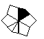

Step 1: Get into Barrel-Barrel. This can always be done in 6 or fewer slices. A basic method to do this step is to get all 8 edges next to each other, then do / U2 D4 /.

 →
→ 
| Name | Image | Algorithm | Probability | Comments |
|---|---|---|---|---|
| Solved | N/A | 2.86% | 1 in 35 skip chance. | |
| Left Feet |  |
/ U' / U' / | 11.43% | |
| Right Feet |   |
/ U / U / | 11.43% | Mirror of Left Feet. |
| Opp. Feet | |
/ U5' / | 22.86% | The most common case. |
| Left Crowbar |  |
/ U / U' / | 5.71% | |
| Right Crowbar |  |
/ U' / U / | 5.71% | Mirror of Left Crowbar. |
| Matching Blocks |  |
/ U' D' / | 2.86% | Can be performed from any angle. |
| Blocolumns |  | / U' / U5 D / | 11.43% | |
| Opp. Blocks |  |
/ U' / U' D' / | 5.71% | Lateral slice into Matching Blocks. |
| Lock | |
/ U' / D5 / | 11.43% | Lateral slice into Opp. Feet. |
| Columns |  |
/ U / U' D' / | 5.71% | Central slice into Matching Blocks. |
| Antipode |  |
/ U D / U / U' D' / | 2.86% | Lateral slice into Columns. |
Step 3: Corner-Edge Pairs: All 8 edges need to be paired with their respective corner. The notation is different here: since 30-degree turns are impossible, a 60-degree turn is U/D.
- Pair 3 edges on the bottom layer: Intuitive.
- Pair the 4th edge on the bottom layer and get into Barrel-Barrel.
- Pair the remaining 4 edges on the top layer. Requires 13 algorithms (10 excluding mirrors).
| Case | Algorithm |
|---|---|
| Adj: 2 ⟷ 3 | / U / D' / U2' / U' / U2' / U2' / U' D / |
| Opp: 2 ⟷ 6 | / D / U / U' / U' / U2' D' / U' / U2' / |
| Diag: 1 ⟷ 4 | / D U2' / D' U2 / U / U2' D / U2 D' / |
| A perm: 6 → 2 → 3 → 6 | / U2 D / U' / U / D' / U2 / |
| A' perm: 6 → 3 → 2 → 6 | / U2' / D / U' / U / D' U2 / |
| a perm: 1 → 2 → 4 → 1 | / U2 / D' / U / U' / D U2' / |
| a' perm: 1 → 4 → 2 → 1 | / U2 D' / U / U' / D / U2' / |
| O perm: 1 → 2 → 4 → 5 → 1 | / U / U / U' / D / U' / U / D' / |
| O' perm: 1 → 5 → 4 → 2 → 1 | / D / U' / U / D' / U / U' / U' / |
| W perm: 2 → 3 → 6 → 5 → 2 | / U2 / U2' / U' / U' / U2' / U / |
| N perm: 1 → 4 → 6 → 3 → 1 | / U2 / U2' / U' / U2 / U / U' / U2' / |
| E perm: 1 ⟷ 2; 4 ⟷ 5 | / D' U' / U' / U D / D' / U D / |
| H perm: 1 ⟷ 3; 4 ⟷ 6 | / D U / U2 / U' D' / U' D / U' D' / |
| Extra Case | Algorithm |
|---|---|
| 10 → 6 → 2 → 10; 1 ⟷ 3 | / U2' / U2 / U2 |
| 1 ⟷ 2; 10 ⟷ 4 | / U' / U' / U / U |
| 10 → 3 → 4 → 10 | / D' / U / U' / D |
Step 4: Square-0
The notation is different again: since only 90-degree turns are used, a 90-degree turn is U/D.
- Get back into cubeshape: / U D / does the trick. It's possible to learn all ~100-ish algs to solve all of step 4 with one alg, but these algs are not listed.
- PBL: Solve the whole thing!
| Name | Algorithm | Probability | Comments |
|---|---|---|---|
| Solved | N/A | 2.78% | 1 in 36 skip chance. |
| N+N | / U D' / U' D / | 2.78% | This case can actually be avoided by doing a U2 before going back into cubeshape. |
| J+J | / U' / U' D' / U' / | 44.44% | Put the solved bars in the back. |
| N+J | / U' / U / U' / U / | 22.22% | Put the solved bar in the bottom-left. |
| Pure J | / U / U' / U' D / U' / U / | 22.22% | Put the unsolved pieces in the top-right, like a normal J perm. |
| Pure N | / U' D' / U / U' D' / U / U' D' / | 5.56% | This is arguably the worst PBL, but it's easy to remember: ( / U' D' / U )x3 |